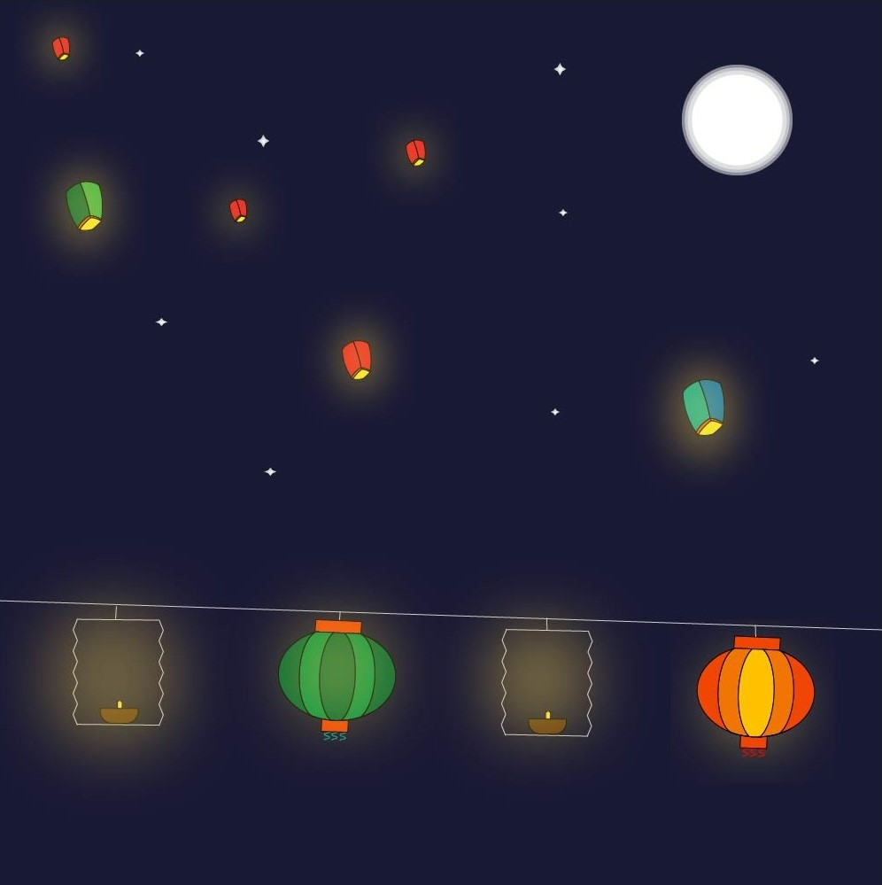

More about Tazaungdaing Festival

|
The Tazaungdaing Festival, held on the full moon day of Tazaungmon, the eighth month of the Burmese calendar, is celebrated as a national holiday in Myanmar and celebrate till the end of the rainy season. It is celebrated on November 18 in English calendar. | |
| On Da Zaung Daing night we put the candles light in front of our house as a tradition. hot air balloons lit with candles are released to celebrate the full moon day. Children are playing with fire crackers and fireworks at night. There are also night market festival in every township. There is only one day for Ta Zaung Mone but the festivals are celebrated at least 3 days. | |
|
|
|
|
| Music Video More about Tazaungdaing Festival |
||
| Made by Ei Phyu Phyu Thant, Linn Htet Aung, Thant Thu Thu Thaw, ThanSin Sithu, Arr Marn Linn Latt, Htoo Khant Aung, Kyaw Zin Aye | ||
|---|---|---|